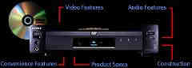
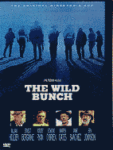

DVD: Ten Reasons to Jump Right In.
By Stu Kobak
Many videophiles are waiting, sitting on the fence like a
phalanx of black crows, watching the writhing body of the laser disc format struggle for
survival. Yet, they are still not crossing over to DVD. Here are ten reasons why you
should cross the fence onto the DVD side of video.
-
DVD is clearing the best consumer video software available
today. It produces pictures superior to laser disc.
-
The virtual absence of video and color noise on DVD.
-
Most feature films fit comfortably on a DVD with no side
changes and with the implementation of RSDL dual layer usage, virtually any length movie
can be viewed with no interruption. 
-
Anamorphic delivery of images on many DVDs is an enormous
advantage over regular letterboxing. An anamorphic image is presented in a squeezed format
and then unsqueezed by a video display device. When viewed on a widescreen ready tube or
projector, loss of vertical resolution is minimized and the resultant pictures are often
stunning.
-
DVDs are not sensitive to warping like laser discs. Many
lasers when not perfectly stored warp slightly and the result is unsightly cross-talk
artifacts in the picture. I have yet to see a DVD exhibit this annoying image compromise
-
DVD is a component video delivery system which needs no NTSC
decoding. on display devices that accept component input, the inherent many of the
inherent artifacts of decoded NTSC video are eliminated or minimized.
-
The Wild Bunch is an astounding bargain on DVD compared to
the price of the Warner  Special Edition laser disc. At $24.95, it
has the same transfer as the $124.95 laser disc and both presentations include the fine
documentary on the making of the film. Yes, the laser box includes a soundtrack CD and a
book, but you can search high and low and won't find a Ben Franklin's there. Take the
hundred bucks saved and plunk it down toward a new DVD player.
-
There is a clear price advantage over laser. Typical list
price is $24.95, while laser's typically retail from $34.95 to $39.95. More than a few of
these bargain priced DVDs include second audio commentary usually included only expensive
laser special editions. Check out Thinner from Republic or Demolition Man from Warner or
Shine from New Line.
-
DVD releases present an opportunity to revisit some great
movies.
-
Fence sitters site the coming of the HDTV format as a reason
for DVD hesitation. Remember, HDTV display devices should have the capability of
unsqueezing anamorphic images, so even if you don't have a widescreen television today,
when you change to the next generation of TV, your anamorphic DVDs will still look great.
Contrarians could probably string an impressive list of
reasons for not buying a DVD player. It's not a perfect format and the vagaries of the
market place has placed limits on the confusion threshold of the consumer. Packaging
varieties are a nightmare, questionable transfers of public domain titles are flooding the
market place, and so forth. But the fact remains, DVD is the best video incarnation we
have yet to experience and in coming months the avalanche of movies will continue to flow
down from the mountaintops of the studios, especially if more consumers get on board. |
The
Feature
Archive has articles ranging
from John
Ford to Blonde
Bimbos, The
Heistmasters and Frank
Darabont.

Click on the image above for as original view of Akira
Kurosawa's work.
Check out the Movie
Poster Archive for short bios and images of Susan
Hayward, Kirk Douglas, Katharine Hepburn and many more. This month's
featured star is Clark
Gable.
Check out the Movie
Poster Archive for short bios and images of Susan
Hayward, Kirk Douglas, Katharine Hepburn and many more. This month's
featured star is Clark
Gable.
Check out the Movie
Poster Archive
for short bios and images of Susan Hayward, Kirk Douglas, Katharine
Hepburn and many more. This month's featured star is Clark
Gable.

Imaging
Science Foundation
promotes proper standards in home theater viewing. ISF trained
technicians offer monitor calibration services to consumers. The
difference in a properly calibrated monitor can be astounding.
Click on the image to find an ISF member near you.
Home
Theater Reference Reviewing System
When you read a DVD review it's of utmost importance to know what
equipment is being used to evaluate quality. Click on the projectors
to find out more.
HOT
LINKS
DVD
Verdict
They may
be judgmental, but that's the point, isn't it. Lots of DVD reviews
plus news and more
The
Home Theater Forum
Looking for
lively and helpful exchanges on home theater, DVD, movies. Visit
this friendly site and get a hardy welcome.
|